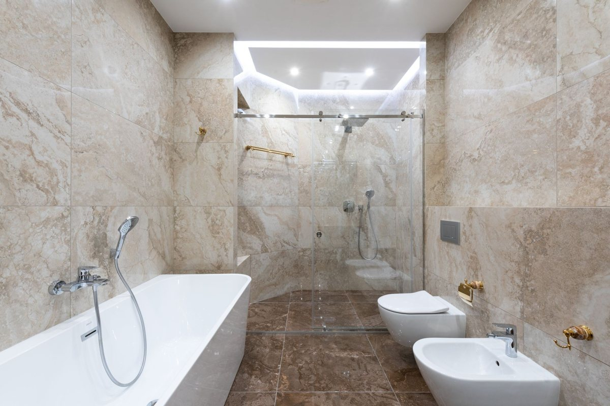
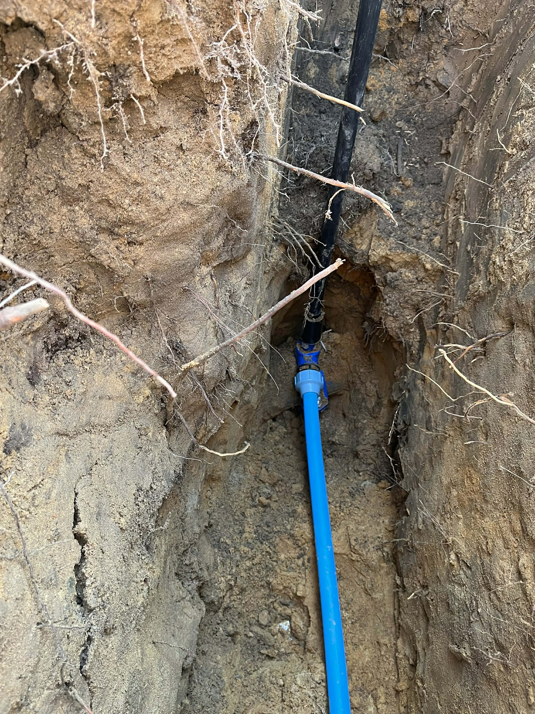
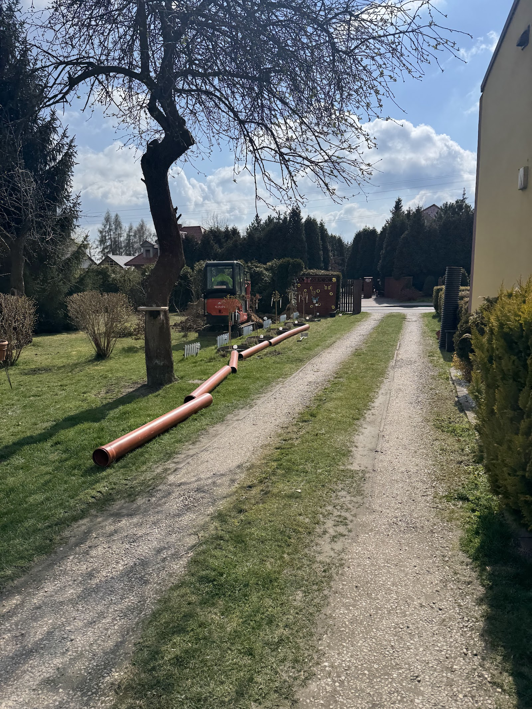

Usługi hydrauliczne
Prosty, przewidywalny proces. Bez niespodzianek i bez naciągania.
Telefon albo zdjęcie awarii. Po minucie rozmowy wiesz, czy przyjadę i kiedy.
Drobne rzeczy wyceniam przez telefon, większe po obejrzeniu na miejscu. Cena ustalona przed robotą już nie rośnie.
Stare części pokazuję, nie wyrzucam po cichu - widzisz, co było zużyte i co wymieniłem.
Pokazuję, co i jak zrobiłem, sprawdzamy razem pod ciśnieniem, że wszystko trzyma. Na wykonaną robotę dostajesz gwarancję - jak coś nie gra, wracam i poprawiam.
Zakres prac, jaki robię najczęściej - pełny opis i wycenę znajdziesz niżej.
Każde z tych zdjęć ma właściciela, który z tej instalacji korzysta do dziś. Kotłownie, łazienki, podejścia - bez upiększania.




Nie wiesz, czy dojadę do Ciebie? Zadzwoń i zapytaj. Jak nie dojeżdżam, powiem od razu i nie zajmę Ci dnia.
Opisz, co się dzieje, albo wyślij zdjęcie - przyjadę, obejrzę i podam jasną cenę. Bez zobowiązań.